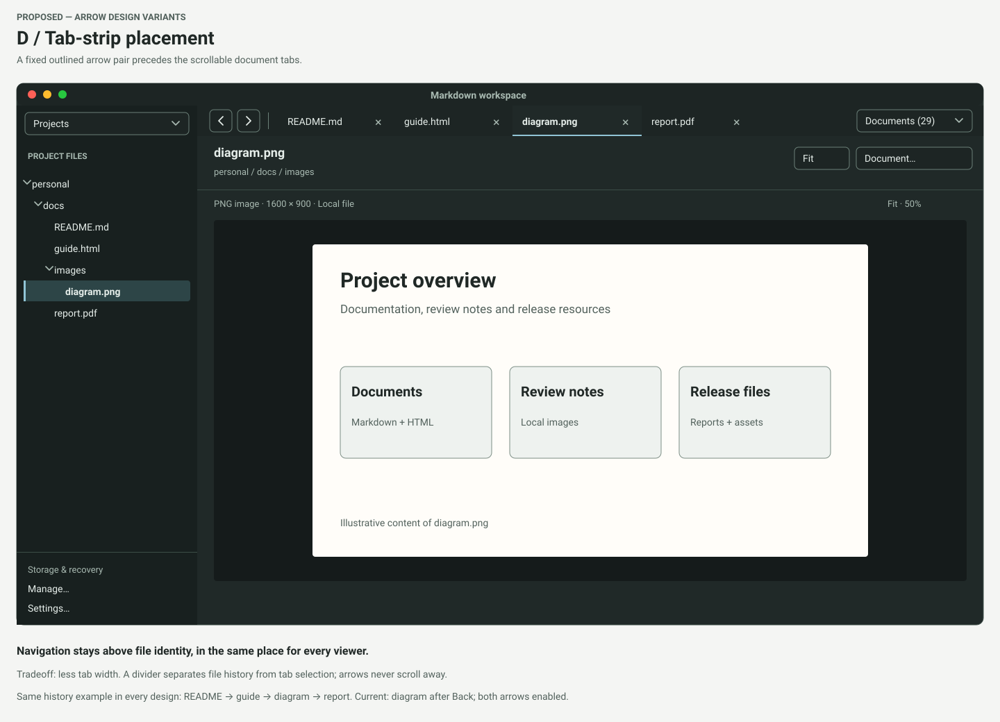
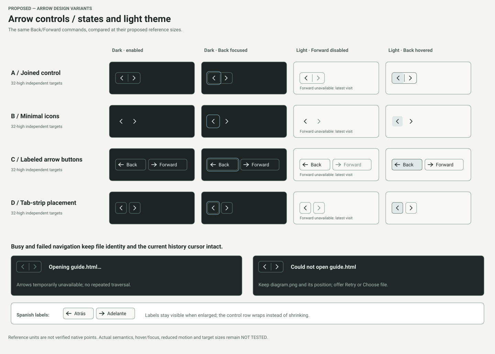
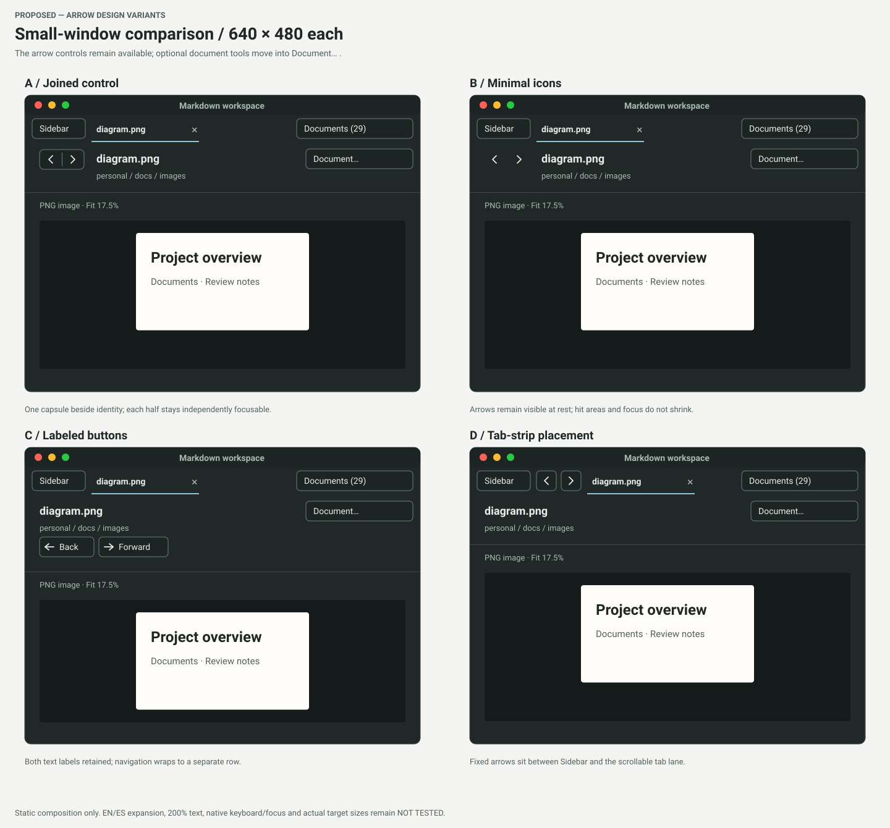

| Design | Appearance | Tradeoff |
|---|---|---|
| A · Joined control | Unselected comparison. A shared capsule before the filename; each half remains a separate button. | Compact grouping and clear targets. |
| B · Minimal icons | Unframed chevrons before the filename, with target backgrounds on hover and rings on keyboard focus. | Quiet appearance; target boundaries are less obvious at rest. |
| C · Labeled buttons | Arrow-and-text buttons: Back and Forward. Both labels stay visible in small windows. | Explicit commands; uses more width and wraps to its own row. |
| D · Beside the tabs | A fixed outlined pair at the beginning of the tab strip, separated from the document tabs. | More room for file identity; reduces tab space and may resemble tab-scrolling controls. |
Every example uses the same history: README → guide → diagram → report; current file is diagram after Back. Both arrows are enabled. Tabs, project tree, file identity and document tools retain their roles.
A · Joined control
Unselected comparison. A shared capsule before the filename; each half remains a separate button. Proposed group size: 72 × 32 reference units.
Compact grouping and clear targets.
Open full SVGB · Minimal icons
Unframed chevrons before the filename, with target backgrounds on hover and rings on keyboard focus. Proposed group size: 72 × 32 reference units.
Quiet appearance; target boundaries are less obvious at rest.
Open full SVGC · Labeled buttons
Arrow-and-text buttons: Back and Forward. Both labels stay visible in small windows. Proposed group size: 208 × 32 reference units.
Explicit commands; uses more width and wraps to its own row.
Open full SVGD · Beside the tabs — selected
A fixed outlined pair at the beginning of the tab strip, separated from the document tabs. Proposed group size: 72 × 32 reference units.
More room for file identity; reduces tab space and may resemble tab-scrolling controls.
Open full SVG
States and light theme
All four controls at their reference sizes: dark enabled, dark keyboard focus, light disabled Forward and light hovered Back. Includes loading, failed navigation and Spanish labels.
Open comparison SVG
Small windows · 640 × 480 each
Four small-window compositions. A/B keep the pair before the filename, C wraps labeled buttons into a separate row, and D keeps arrows fixed before the scrollable tabs.
Open comparison SVG